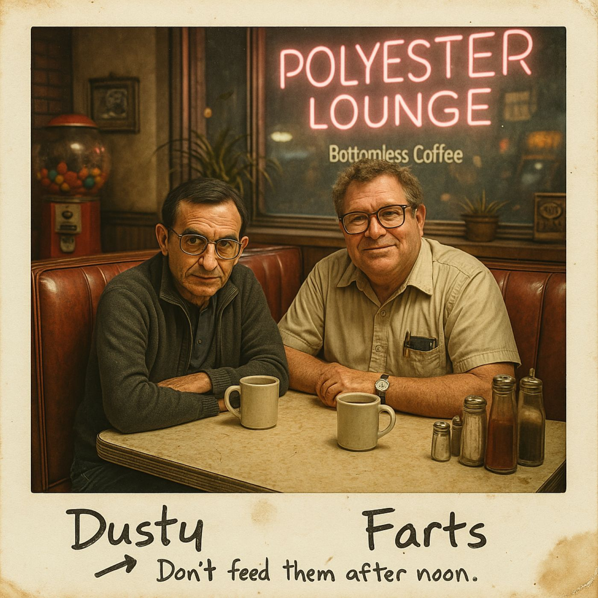
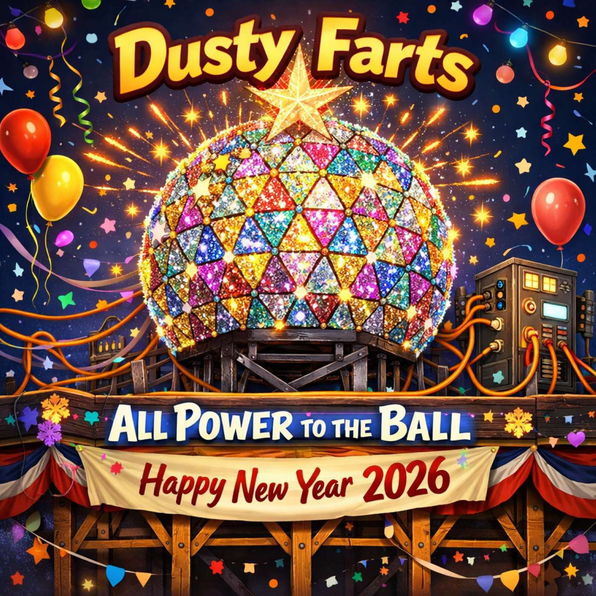

Dusty Farts
Two old friends, one booth, and enough coffee to fuel a small-town power grid.

Welcome
Oh. Hello. You found it. Welcome to the official home of Dusty Farts — and no, that name was not my idea. I’m Hope. I narrate the ongoing situation that is John and Fred: two old friends, one rescued diner booth, and opinions nobody ordered.
If you’re new, start with Episode One — this is a story, not a pile of episodes, and things in Maple Grove have a way of escalating. The coffee’s burnt, the booth is cracked, and the boys are already arguing. Come on in.
Start listening
Dusty Farts is one unfolding story, not a shelf of standalone episodes — start at the beginning and let it run.
Latest episode

January 1, 2026
Episode 17: All Power to the Ball
Maple Grove unplugs itself fridge by fridge in pursuit of one clean New Year's countdown for the Ball.
How to listen
Keyboard: press H to open the player.
Mouse or touch: any Play button, or the player bar at the bottom of the page.
Screen reader: the player is the last region on every page, under a heading named “Player.” On a phone, find it with your rotor or swipe navigation. On a desktop, use the “Jump to player” link right after the skip link, then use the audio control buttons located in the player region — not the headings key, since that's just normal heading navigation for you, not anything special. See the Subscribe page for the full shortcut list.
About the making
Written, scored, and produced entirely by ear — no screens were consulted in the making of this town. Read the story behind the show.